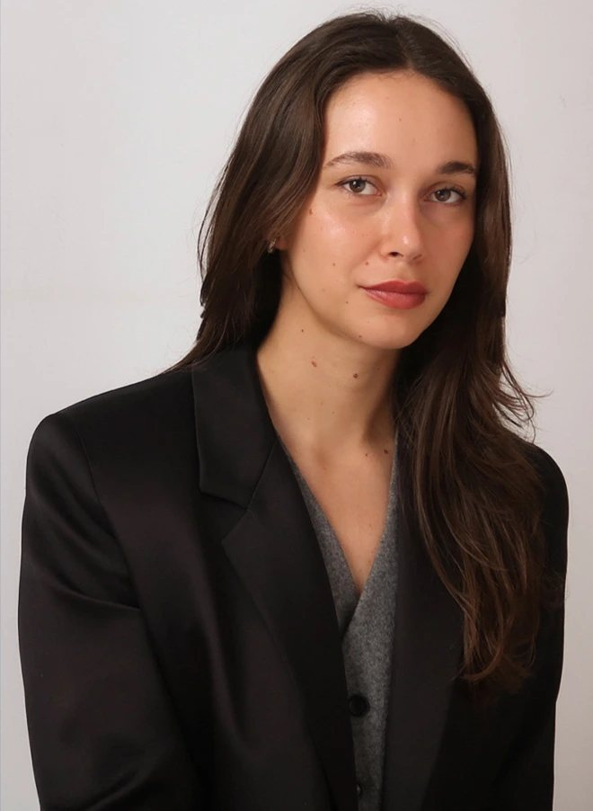

Designer with a holistic and editorial approach.

I work on identity, editorial, branding, and art direction projects from a strategic and conceptual perspective, placing emphasis on the construction of coherent visual narratives and systems that hold up over time.
My goal is to articulate content, form, and narrative to give structure and meaning to brands and projects.
Education
Elisava
Master's Degree in Editorial Design · September 2025 – July 2026
University of the Arts London
Art Direction Course · 2022
Pontificia Universidad Católica de Chile
Degree in Integral Design · July 2015 – November 2020
Holistic, critical, and interdisciplinary design approach, with a focus on sustainability and social responsibility.
Experience
Wizards Only — Creative Designer
Creative studio, Barcelona · Internship · 2026 – present
Art direction support on shoots: moodboards, styling, visual references and creative supervision. Design of social content systems following each brand's identity. Video editing for Reels and Stories, and photo retouching for campaigns. Newsletter design and website updates. Clients include Franca Projects and Lebor Gabala.
Wild Lama — Brand designer
Sustainable lifestyle brand, Chile · March 2024 – August 2025
Marketing strategy and brand positioning development. Art direction and fashion campaign production. Graphic design of digital and physical pieces.
Falabella Art Direction Team — Intern
Major Latin American retail and department store chain · February 2023 – March 2024
Design of graphic pieces for digital and physical media. Development of key visuals for campaigns. Fashion production assistance for shootings.
Falabella — Web designer
Major Latin American retail and department store chain · April 2021 – March 2024
Mailing design, media strategy, landing pages, key visuals, and campaign lead for select graphic campaigns.
Fundación Paiz de Guatemala, Bienal 22° — Graphic designer
Cultural foundation, contemporary art biennial · October 2019 – May 2021
Design of graphic pieces for digital media. Editorial design of the biennial catalogue. Editorial design of the biennial atlas. Web design.
Enrique Concha & Co. — Intern
Interior design and architecture firm, Chile · January 2019
Design of the architecture and interior design projects portfolio.